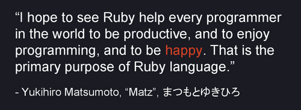

[i]: Ask questions if you don't understand... [i]: There is quite a lot of content in this lesson.
We're going to look at one of our core programming languages on this course, Ruby. But what is it called?
Created in 1995 by Yukihiro Matsumoto:

"I hope to see Ruby help every programmer in the world to be productive, and to enjoy programming, and to be happy. That is the primary purpose of Ruby language."
Matz is just great.
Ruby is an interpreted scripting language. Some computer languages need to first be compiled into machine-language before they can be run. An interpreted language uses a program called an interpreter (ruby) to convert the written code, called scripts, into a sequence of subroutines that were already compiled into machine code, on the fly.
You don't need to know how this works...
Compiled code is often faster, but intepreted code allows us to do things dynamically.
Ruby is compiled in C. If you want to read more about how that works, read Ruby Under a Microscope.
Ruby (the language) is shipped with another command-line tool that is different than ruby (the intepreter), it's called irb the interactive console. Shell
Why is it called irb? Because of .rb files.
Irb is an example of a REPL:
It's great for evaluating short snippets of code.
Make friends because you are going to get very, very familiar.
$ irb
Open irb
You can also open a slightly simpler irb using:
$ irb --simple-prompt
Let's just do a quick sum:
100 + 32
=> 132
In order to exit irb, you can type:
exit
quit
ctrl + d
Repeat after me:
And every object is and example or instance of a particular 'Class' or type of object.
Just like this computer is an instance of a computer class, and a chair is an instance of a chair class... Everything is an object in Ruby.
We're going to cover Object Oriented Programming (OOP) in much more depth later, but for now, if we want to know what type of Object something is, we can ask it with the method .class
$irb
1.class
=> Fixnum
"1".class
=> String
1.0.class
=> Float
# The same as:
(1.0).class
=> Float
We call these data-types, however in Ruby they are all still objects. I understand this is a confusing concept at the moment but it will become clearer.
Just remember, everything in Ruby is an object.
There is one other datatype that you should be aware of, Booleans - true and false. (They are also Objects in Ruby).
true.class
=> TrueClass
false.class
=> FalseClass
These are examples of special objects in Ruby.
There is another special object that you will come across:
nil.class
=> NilClass
There is no NULL in Ruby.
Write on the board:
Similar to a calculator you can do arithmetic operations in ruby
| Operation | Example(s) |
|---|---|
| Arithmetic | 2+3 (addition) |
| Arithmetic | 2-3 (subtraction) |
| Arithmetic | 2*3 (multiplication) |
| Arithmetic | 2/3 (division) |
| Arithmetic | 2**2(power of) |
| Arithmetic | 10%1(modulus) |
Does anyone know what modulus is?
In irb:
2 + 3
=> 5
You can also perform arithmetic on strings:
"5" + "5"
=> "55"
This is called string concatenation.
What happens if we do:
5 / 2
=> 2
Have we broken Ruby? No, we have given ruby two Integers (no decimal places) so ruby gives us an Integer back.
However, if we divide an Integer by a Float
5 / 2.0
=> 2.5
This is called "Type Coercion" also known as "Duck Typing", where Ruby now knows that we want a Float back.
If an object quacks like a duck (or acts like a string), just go ahead and treat it as a duck (or a string).
Integers and Floats share a few similarities, they are both Numeric. However, what if we did:
"5" + 5
=> TypeError: no implicit conversion of Fixnum into String
You will get to know this error really well. You can't divide a computer by a chair!
You might also see this:
"5" / 2.0
=> NoMethodError: undefined method `/' for "5":String
Which means, a String can't divide, just like a Chair can't fly.
Now that we have looked at some of the basic data-types, lets look at how to convert from one type to another:
.to_i
This is the string-to-integer conversion. We call to_i on an instance of a string to convert it to an integer.
"5".to_i
=> 5
This sometimes gives unexpected results:
"Hello".to_i
=> 0
"4vid".to_i
=> 4
"vid4".to_i
=> 0
You can also use the method:
.to_s
To convert something to a integer-to-string.
1.to_s
=> "1"
| Operation | Example(s) |
|---|---|
| Conversion | "100".to_i (string-to-integer) |
| Conversion | 52.to_s (integer-to-string) |
There are a few different types of identifiers in Ruby, but we're just going to look at one for the moment.
We can store values in local variables. Variables:
first_name
We can assign objects to variables using =
a = 1
=> 1
a
=> 1
We can assign variables to equal other variables
a = 1
=> 1
b = 2
=> 2
a
=> 1
a = b
=> 2
a
=> 2
They're are called variables because the assigned values can change (we also call this 'mutability').
| Operation | Example(s) |
|---|---|
| Assignment | a = "hello" |
| Assignment | b = 52 |
Often we want to compare whether values or variables are equal, or indeed not equal:
1 == 1
=> true
1 == 2
=> false
# Now using variables
a = 1
=> 1
b = 2
=> 2
a == b
=> false
Let's try:
1 != 2
=> true
We can also evaluate whether one value is greater than or less than another value:
1 > 2
=> false
2 < 1
=> true
1 >= 1
=> 2
This also works with strings:
"a" > "b"
=> false
"b" > "a"
=> true
"a" > "A"
=> true
Capital 'A' comes before lower-case 'a' in the ASCII character-set - so is 'smaller'.
| Operation | Example(s) |
|---|---|
| Comparison | x == y |
| Comparison | y != 42 |
| Comparison | 1 > 2 |
| Comparison | 500 < 501 |
| Comparison | 3 >= 3 |
It's useful using a REPL to evaluate small chunks of code. However, sometimes we need to save code into files.
Navigate to working directory or desktop.
$ mkdir intro_to_ruby && intro_to_ruby
$ touch file.rb
$ subl file.rb
Then inside the file add:
3 + 2
And run the file using the ruby interpreter:
$ ruby file.rb
NOTHING HAPPENS?
The program has run but we need to get the file to output our result to the command line. For this we need to use the Ruby method ```print````:
# In file.rb
print 3 + 2
$ ruby file.rb
=> 5
We can also use puts which is the same except that a newline is added to the string that is output.
# In file.rb
puts 3 + 2
$ ruby file.rb
=> 5
When we want to get an input from the user, we can use gets. Which means get string (everything entered into the CLI is text).
# In file.rb
answer = gets
puts answer
$ ruby file.rb
As gets actually records when you press enter, so we can also use .chomp to remove that newline:
answer = gets.chomp
puts answer
$ ruby file.rb
It's important to remember that there are lots of different programming languages. Ruby is just one, however it's design is argueably one of the nicest and well thought out. This is why we use it.
We want you to be happy, just like Matz wants.